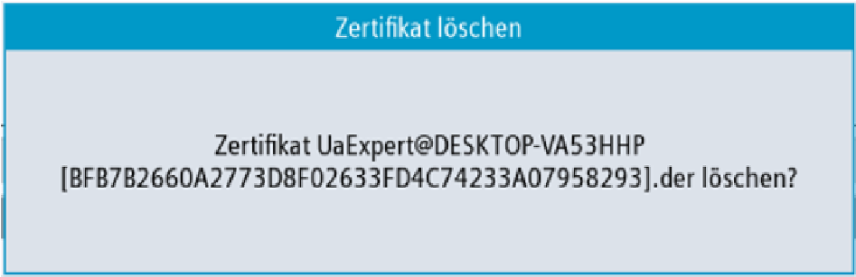
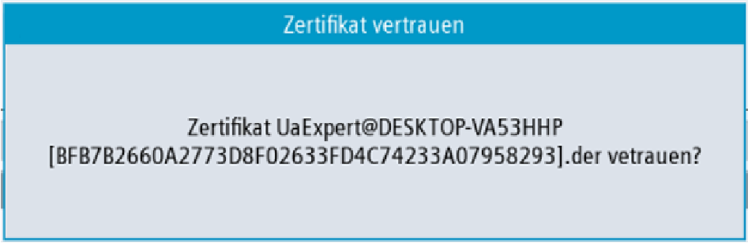

① | Die abgewiesenen Zertifikate werden im oberen Teil des Bildschirms aufgelistet. Sie können ein Zertifikat mit den Pfeiltasten auswählen (Cursor auf/Cursor ab). |
② | Sie können das ausgewählte Zertifikat löschen. |
③ | Sie können dem ausgewählten Zertifikat vertrauen. |
④ | Sie können die OPC UA-Dialoge verlassen. |
⑤ | Die Details des Zertifikats werden im unteren Bereich des Bildschirms angezeigt. Um den Fokus auf den unteren Teil des Bildschirms zu setzen, wird der Softkey "Nächstes Fenster" auf der Tastatur verwendet. |
Abgewiesenes Zertifikat
Um ein Client-Zertifikat manuell zu löschen, wählen Sie ein Zertifikat in der Liste der abgewiesenen Zertifikate aus und drücken Sie den Softkey "Löschen".
Sie werden in einem Popup-Fenster aufgefordert, den Löschvorgang zu bestätigen:
Zurückgewiesenes Zertifikat löschen
Wenn Sie den Softkey "Abbruch" drücken, werden alle Eingaben verworfen und Sie gelangen zum vorherigen Dialog zurück.
Wenn Sie den Softkey "OK" drücken, wird das ausgewählte Zertifikat gelöscht.
Wenn die Einstellung "Zertifikate automatisch akzeptieren" deaktiviert ist, werden von einem Client automatisch übertragene Zertifikate beim ersten Verbindungsaufbau als nicht vertrauenswürdig angesehen. Sie müssen manuell als vertrauenswürdig akzeptiert werden, bevor die Verbindung hergestellt werden kann. In diesem Fall meldet der Server beim ersten Verbindungsaufbau einen Fehler (BadSecurityChecksFailed).
Um einem Client-Zertifikat manuell zu vertrauen, wählen Sie ein Zertifikat in der Liste der abgewiesenen Zertifikate aus und drücken Sie den Softkey "Vertrauen".
Sie werden in einem Popup-Fenster aufgefordert, zu bestätigen, dass das Zertifikat als vertrauenswürdig akzeptiert werden soll.
Zertifikat vertrauen
Wenn Sie den Softkey "Abbruch" drücken, werden alle Eingaben verworfen und Sie gelangen zum Dialog "Abgewiesen" zurück.
Wenn Sie den Softkey "OK" drücken, wird das Zertifikat als vertrauenswürdig akzeptiert und in den Ordner der akzeptierten Zertifikate verschoben.